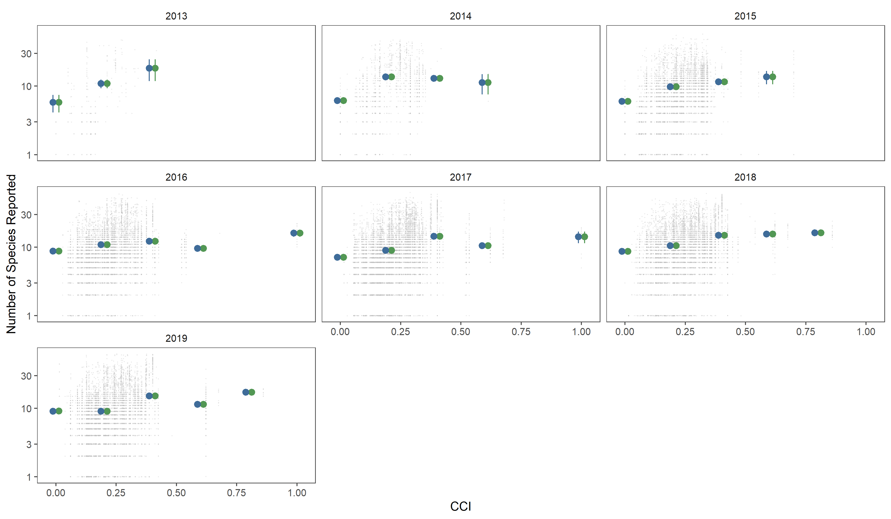
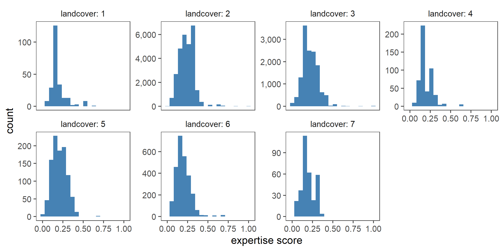

Section 7 Obsever expertise in time and space
7.1 Prepare libraries
7.2 Species seen in relation to osberver expertise
# summarise data by rounded score and year
data_summary01 <- data %>%
mutate(score = plyr::round_any(score, 0.2)) %>%
select(score, year, nSp, nSoi) %>%
pivot_longer(cols = c("nSp", "nSoi"),
names_to = "variable", values_to = "value") %>%
group_by(score, year, variable) %>%
summarise_at(vars(value), list(~mean(.), ~ci(.)))
# make plot and export
fig_nsp_score <-
ggplot(data_summary01)+
geom_jitter(data = data, aes(x = score, y = nSp),
col = "grey", alpha = 0.2, size = 0.1)+
geom_pointrange(aes(x = score, y = mean,
ymin=mean-ci, ymax=mean+ci,
col = as.factor(variable)),
position = position_dodge(width = 0.05))+
facet_wrap(~year)+
scale_y_log10()+
# coord_cartesian(ylim=c(0,50))+
scale_colour_scico_d(palette = "cork", begin = 0.2, end = 0.8)+
labs(x = "expertise score", y = "species reported")+
theme_few()+
theme(legend.position = "none")
# export figure
ggsave(filename = "figs/fig_nsp_score.png", width = 8, height = 6, device = png(), dpi = 300); dev.off()

(#fig:show_fig_nsp_score)Total number of species (blue) and species of interest to this study (green) reported in checklists from the study area over the years 2013 – 2018, as a function of the expertise score of the reporting observer. Points represent means, with bars showing the 95% confidence intervals; data shown are for expertise scores rounded to multiples of 0.2, and the y-axis is on a log scale. Raw data are shown in the background (grey points).
7.3 Expertise in relation to landcover
# plot histograms of expertise scores in different landcover classes
data <- filter(data, !is.na(landcover))
# make plot
fig_exp_lc <- ggplot(data)+
geom_histogram(aes(x = score), fill = "steelblue", bins = 20)+
facet_wrap(~landcover, scales = "free_y", labeller = label_both, nrow = 2)+
scale_y_continuous(labels = comma)+
theme_few()+
theme(legend.position = "none")+
labs(x = "expertise score", y = "count")
# export figure
ggsave(filename = "figs/fig_exp_lc.png", width = 8, height = 4, device = png(), dpi = 300); dev.off()

(#fig:show_fig_exp_lc)Distribution of expertise scores in the seven landcover classes present in the study site.